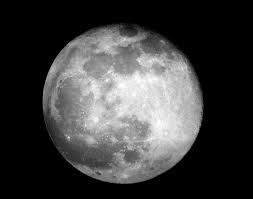
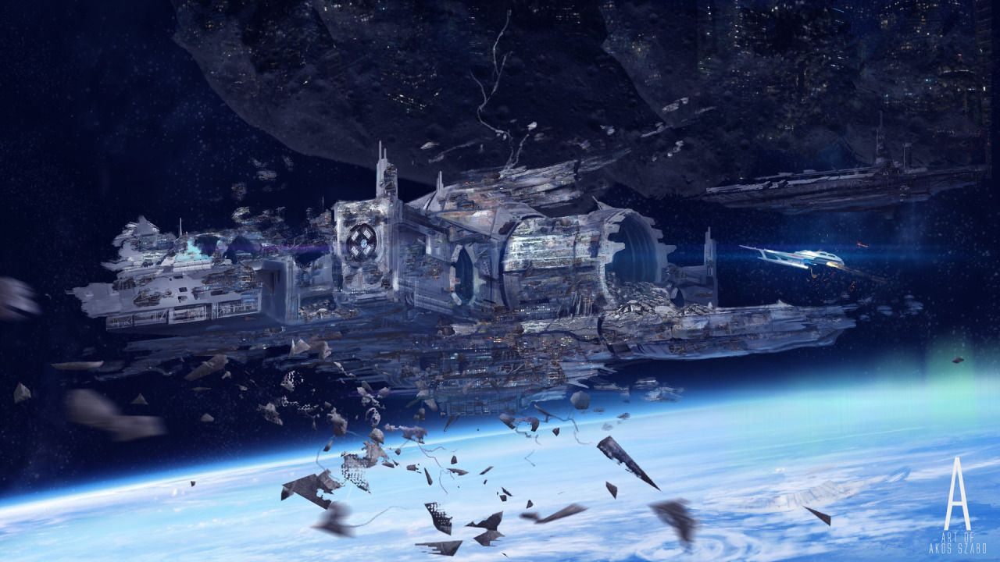

The journey begins
You've taken off into space, now you must try to find the yellow crystal. As you continue to move forward in space, you see the moon coming up to your right and a sparkle shines at your eyes from the moon. You're tempted to see what that sparkle is but you also notice an abandoned spaceship to your left, possibly one of the other searchers...
Fly the spaceship to the the moon? Or to the abandoned spaceship?

